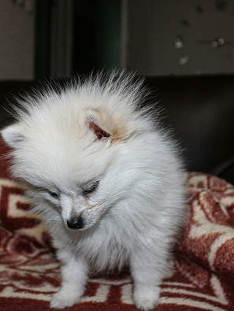
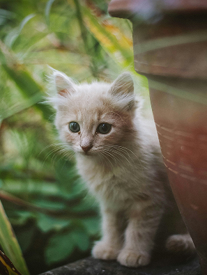

팝업
찾습니다
가족을 찾습니다.
-
실종
스탠다드 푸들
- 실종장소 경기도 김포시 구래역 마루호텔 1층
- 실종날짜 2025-05-09
- 특이사항 코 주변과 발바닥이 붉으스름 합니다.
-
종료
요크셔테리어
- 실종장소 서울특별시 종로구 청계천
- 실종날짜 2025-05-10
- 특이사항 중성화 되어 있고,강아지 등에 털이 빠지고 피부병이 심하고,소심함.
-
실종
잉글리쉬 불독
- 실종장소 경기도 파주시 오금리미곡처리장
- 실종날짜 2025-05-10
- 특이사항 사람을좋아하고 애교가많지만 큰 소리에 겁이많음
-
실종
코리아 쇼트 헤어
- 실종장소 대구광역시 달성군 서재보성타운
- 실종날짜 2025-05-11
- 특이사항 통통하고 건강함 순하고 애교가 많으나 잘 놀람 왼쪽 아래 송곳니 부러짐
주인을 찾습니다.
-
목격
닥스훈트
- 실종장소 충청남도 서천군 충남 서인로662
- 실종날짜 2025-05-12
- 특이사항 매우 순하고 겁이 많아보임. 사람을 무서워하지는 않음.
-
종료
말티즈
- 실종장소 서울특별시 동대문구 답십리
- 실종날짜 2025-05-13
- 특이사항 처음발견했을당시 미용이 되어 있었어요.
-
구조
포매라니안
- 실종장소 서울특별시 서대문구 인왕산 밑자락
- 실종날짜 2025-05-13
- 특이사항 흰색 털, 순한 편임, 인식표 없음
-
목격
먼치킨
- 실종장소 경기도 양주시 옥정중학교
- 실종날짜 2025-05-15
- 특이사항 흰색에 회색섞여있고 다리절뚝거림